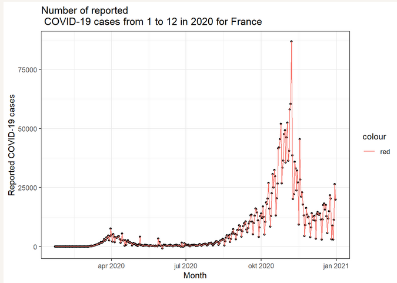
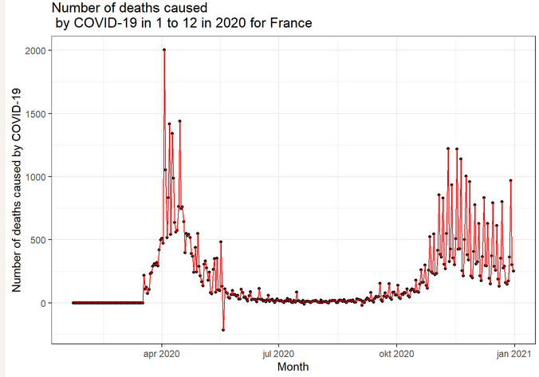
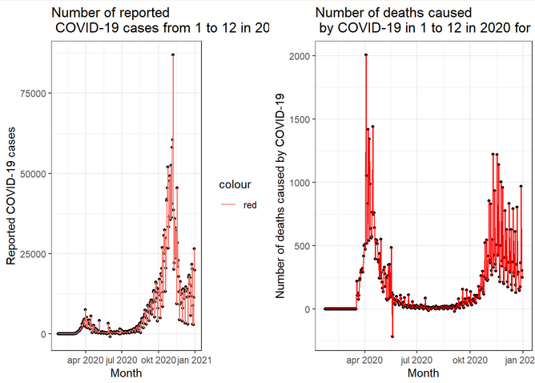

8 Evaluating COVID-19 cases and deaths
Introduction Previously, I reproduced the analysis by Riffomonas to demonstrate the value of reproducible research as well as grade the analysis on reproducibility. While the analysis got an A on reproducibility, it also showed that France showed the highest reluctance to get a COVID-19 vaccine in August 2020.
From the ECDC website I downloaded a dataset which contains the number of COVID-19 cases and deaths from 2020 till 2022.
In this analysis I use parameters to plot the number of COVID-19 cases and deaths by COVID-19 (related complications).
# data import
## from folder raw_data
df <- read.csv(here::here("raw_data", "009_data.csv"))# save the plot in an object to combine it later using cowplot
df <- df %>%
## filter all data for France
dplyr::filter(countriesAndTerritories == params$country,
year == params$year,
month >= params$period_start,
month <= params$period_end)
# the column dateRep gives the full date of the data collected but
## is of the data class character
## change the class type of dateRep to numeric by classifying it as a date
df$dateRep <- as.Date(df$dateRep, format = "%d/%m/%Y")# plot the number of reported COVID-19 cases in the year 2020
cases <- df %>%
ggplot(aes(x = dateRep, y = cases)) +
## size of the points
geom_point(size = 1) +
## line color
geom_line(aes(color = "red")) +
## explain the graph
labs(title = paste("Number of reported \n COVID-19 cases from", params$period_start, "to", params$period_end, "in", params$year, "for", params$country),
x = "Month",
y = "Reported COVID-19 cases") +
## legend is unnecessary
theme(legend.position = none) +
## choose a theme to your liking
theme_bw()
## let's take a look
cases

plot1
# plot the number of deaths by COVID-19 in the year 2020
deaths <- df %>%
ggplot(aes(x = dateRep, y = deaths)) +
## size of the points
geom_point(size = 1) +
## color of the lines
geom_line(color = "red") +
## explain the graph
labs(title = paste("Number of deaths caused \n by COVID-19 in", params$period_start, "to", params$period_end, "in", params$year, "for", params$country),
x = "Month",
y = "Number of deaths caused by COVID-19") +
theme(legend.position = none)+
## choose a theme to your liking
theme_bw()
## let's take another look
deaths

plot2
Combine both plots to visualize the distinction.
plot_grid(cases, deaths,
label_size = 8)

plot3
What to take a look under the hood? See the source code here